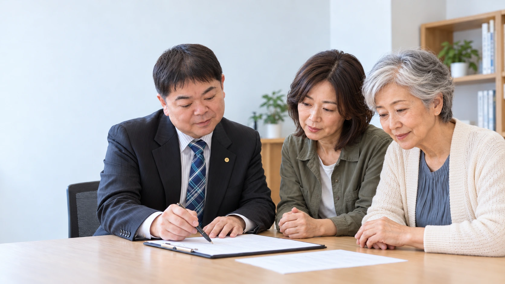
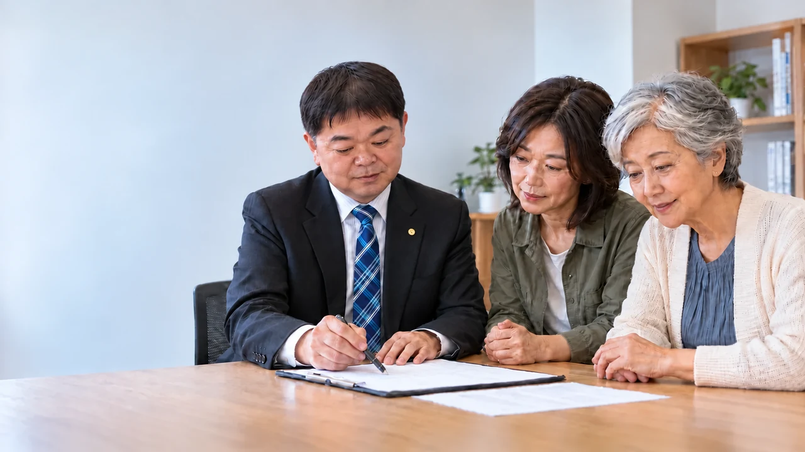
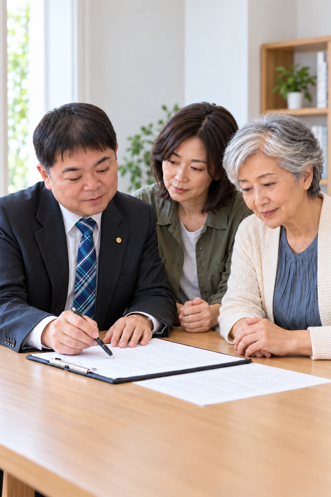
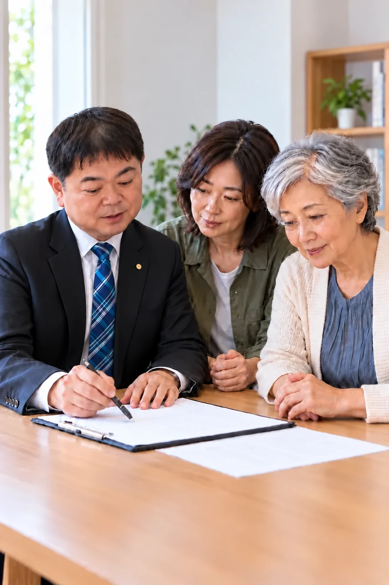
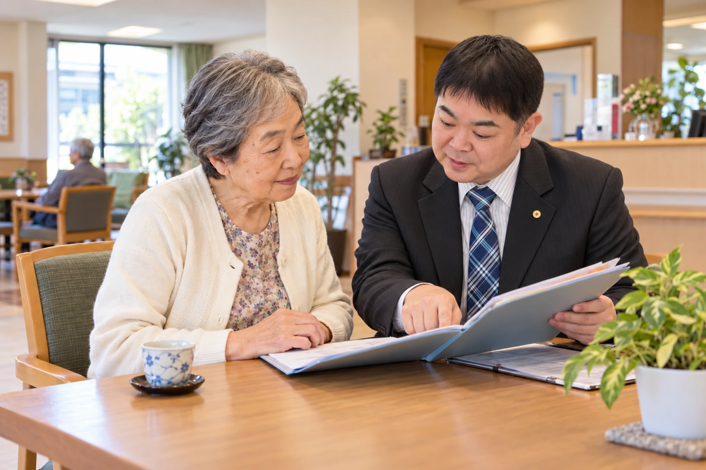
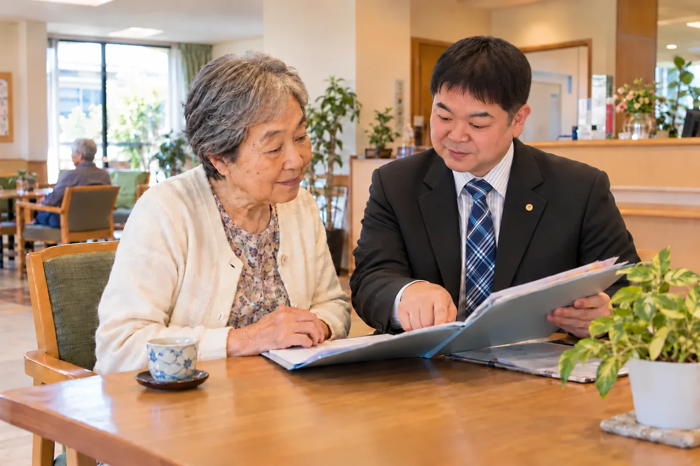
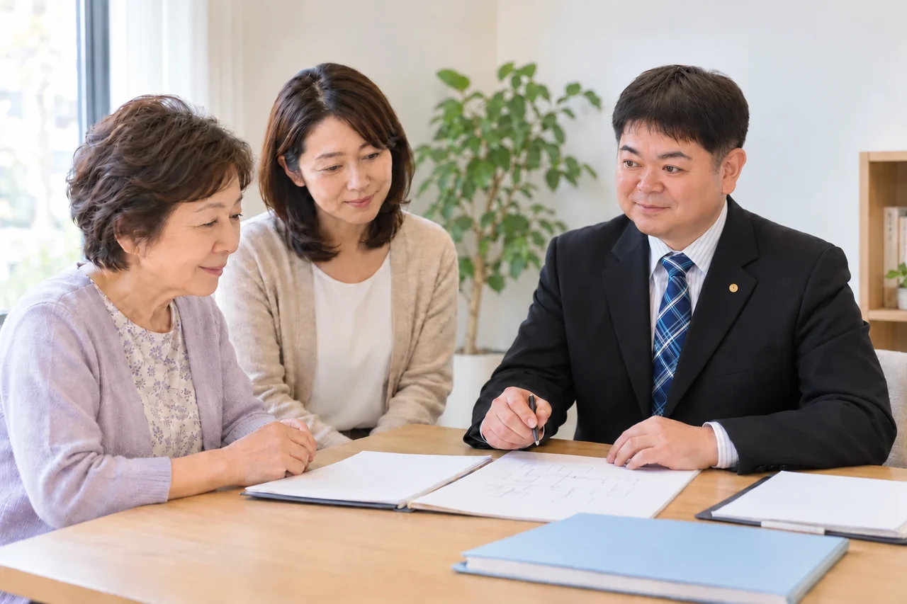

新案Aを目安に、写真全体を作り直し
代表の写真と最初の素材を参照し、4枚を新しく生成しました。顔の大きさは新案Aを目安にしています。
各写真の下で「最初の元画像」と「新案A」も比較できます。
確認用です。現行サイトの写真はまだ切り替えていません。
ヒーロー・パソコン横長

画像を大きく開く ↗最初の元画像・新案Aと見比べる


ヒーロー・スマホ縦長

画像を大きく開く ↗最初の元画像・新案Aと見比べる


身元保証の相談場面

画像を大きく開く ↗最初の元画像・新案Aと見比べる


相続手続きの相談場面
最初の元画像・新案Aと見比べる

